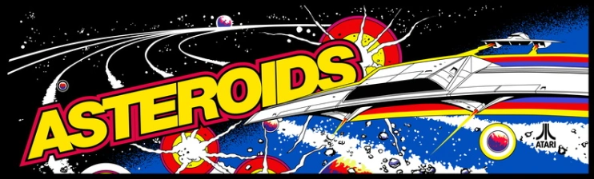

Asteroids
☰
Inicio
Historia
Mecanicas
Acerca
Inicio

Historia
Diseñado para las Arcade fue diseñado con vectores con un software llamado Quadrascan que es un sistema de refresco de vectores, este juego es en parte inspirado por otro llamado SpaceWar! que en parte era un juego de 2 jugadores y Asteroids es en escencia la experiencia para un solo jugador, al momento de desarrollar este juego estaba en desarrollo otro llamado Lunar Lander pero como este juego fue muy vendido pararon con su desarrollo, Gracias a este juego igual se puede hacer registro de las puntuaciones por lo que es un pionero en su epoca.
Mecánicas
Presiona las flechas para avanzar en 8 direcciones, para disparar proyectiles presionar "Z", al derribar asteroides se desprenderan pedazos que te daran mas puntuacion, pero al chocar te inflingiran daño hasta perder, El jugador cuenta con 5 vidas, al perderlas todas se acaba el juego y se reune la puntuación.
Acerca
Los creadores son...
Hecho por victin :D